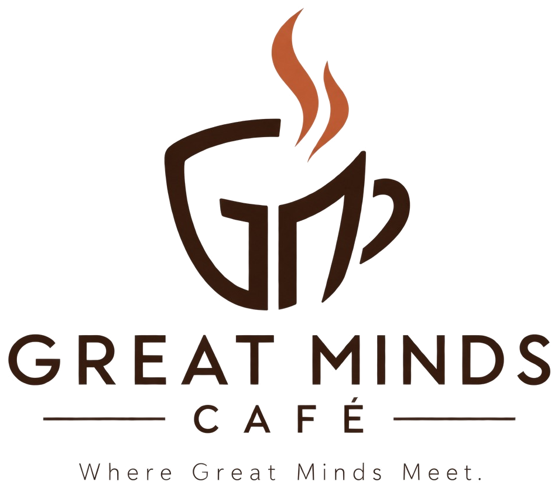
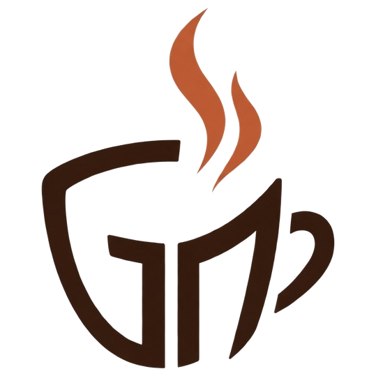

Our café was selling out its capacity. By adding servers ahead of demand, we turned lost customers into sales and grew market share.
Matthew Kurr|Investor driver pitch
Performance data source: BizCafe Simulation Results, Weeks 1-14.

Revenue for every $1 spent on staff
Week 1
$1.18
Week 14
$5.49
Industry average $4.68. We ranked 3rd of 7 while adding the most staff early.
Source: Great Minds Café weekly results, Weeks 1-14 (Revenue; Total Staff Costs). Industry average and rank: Week 14, seven teams.
2
Servers on staff Great Minds Café - - Top 3 teams' average
Our revenue market share (%)
12 → 23 servers, more than any rival. Share 15.7% → 17.4%; net income $3.6k → $9.2k.
Held 25-29 servers while the top 3 reached 44. Utilization hit 98%; share fell 20.0% → 12.6%.
25 → 48 servers. Share back to 17.8%; weekly net income $20.1k → $45.8k.
*Price cuts and 2-for-1 promos also drove this drop. See the Pricing and Customer Value presentation.
Source: BizCafe weekly results, Weeks 1-14. Top 3 = The Neighborhood Cafe, The Last Bean, Qafé Questrom (by cumulative net income). Same-week patterns are associations, not proven causes.
3
Each added server was associated with
+113
more cups sold per week
+$489
more net income per week
Holding the week constant, across all six active teams (84 café-weeks). Fit: adj. R² 0.94.
Source: GMC driver analysis; stepwise OLS on 84 team-weeks (6 active teams; Team 07 excluded), weekly time trend controlled. Associations, not proven causes.
4
Fund the playbook that worked. It held market-wide and in every phase; your investment lets us run it at scale.
Where we finished, Week 14
Net income
$45.8k
3rd of 7 teams
Cups sold
9,750
3rd of 7 teams
Employee satisfaction
88
1st of 7 teams
The playbook
Source: BizCafe Simulation Results, Week 14, seven teams. Recommendation is forward-looking and remains subject to testing.
5